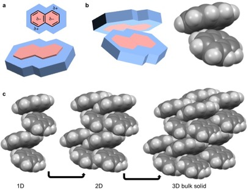

Moleküler katı , ayrı moleküllerden oluşan bir katıdır . Molekülleri bir arada tutan kohezyon kuvvetleri van der Waals kuvvetleri , dipol-dipol etkileşimleri , kuadrupol etkileşimleri , π–π etkileşimleri , hidrojen bağları , halojen bağları , London dağılım kuvvetleri ve bazı moleküler katılarda Coulomb etkileşimleridir . [ 3 ] [ 4 ] [ 5 ] [ 6 ] [ 7 ] [ 8 ] [ 9 ] [ 10 ] Van der Waals, dipol etkileşimleri, kuadrupol etkileşimleri, π–π etkileşimleri, hidrojen bağı ve halojen bağı (2–127 kJ mol −1 ) [ 10 ] tipik olarak diğer katıları bir arada tutan kuvvetlerden çok daha zayıftır: metalik ( metalik bağ , 400–500 kJ mol −1 ), [ 4 ] iyonik ( Coulomb kuvvetleri , 700–900 kJ mol −1 ), [ 4 ] ve ağ yapılı katılar ( kovalent bağlar , 150–900 kJ mol −1 ). [ 4 ] [ 10 ] Moleküller arası etkileşimler, metalik ve bazı kovalent bağların aksine, genellikle yer değiştiren elektronları içermez . İstisnalar , radikal iyon tuzu olan tetratiyafulvan-tetrasiyanoquinodimethan (TTF-TCNQ) gibi yük transfer kompleksleridir . [ 5 ] Kuvvet gücündeki (yani kovalent vs. van der Waals) ve elektronik özelliklerdeki (yani yer değiştiren elektronlar) bu farklılıklar, moleküler katıların benzersiz mekanik , elektronik ve termal özelliklerine yol açar . [ 3 ] [ 4 ] [ 5 ] [ 8 ]
